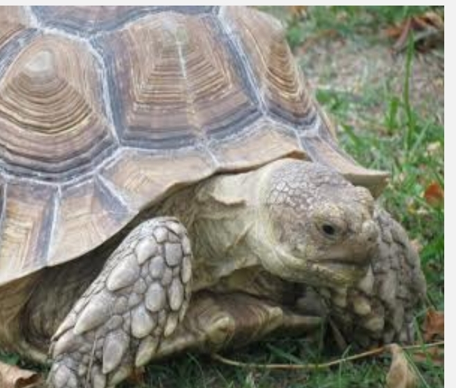

TORTOISE
Tortoises look quite similar to turtles, with a few differences. Because they do not need to be hydrodynamic, they typically have a much more rounded or domed shell than turtles do. Their heads and legs can be withdrawn into the protection of their shells. Tortoises have heavily armored and clawed feet, affording perfect tools for digging and burrowing into the ground.
WHERE DO WE FIND THEM ?
Tortoises are found from southern North America to southern South America, around the Mediterranean basin, across Eurasia to Southeast Asia, in sub-Saharan Africa, Madagascar, and some Pacific islands.